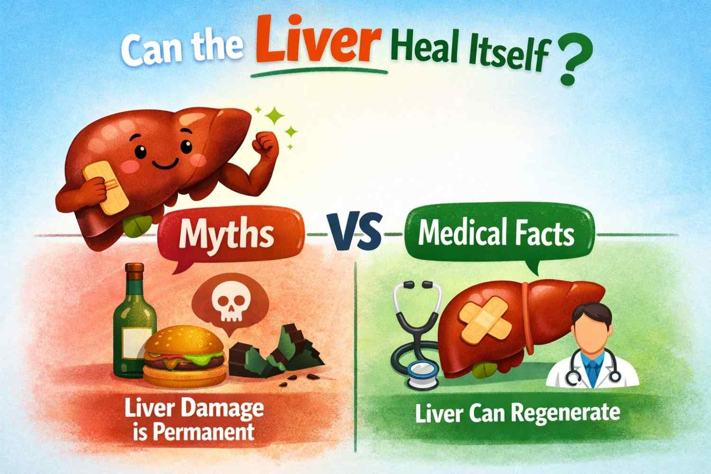

Can the Liver Heal Itself? Myths vs Medical Facts
.webp)
Senior Liver Transplant & HPB Surgeon with 15+ years of clinical expertise.
13 Apr 2026

The liver is one of the most important organs in the human body. It works all day and night to keep you healthy by filtering toxins, helping digestion, storing nutrients, and supporting metabolism. Because it can regenerate, many people think the liver can always heal itself, no matter the damage.
But is that really true?
Can the liver fully repair itself after years of damage?
Or is there a point when healing is no longer possible?
In this guide, we will explain the truth simply. You will learn what the liver can heal, what it cannot, and when you should seek help from a liver surgeon in Delhi.
Liver Functions and Their Importance
Before discussing recovery, it is essential to first understand the workings of the liver.
The liver carries out over 500 crucial processes in the body, which include:
- Detoxifying the blood
- Metabolizing drugs and alcohol
- Bile formation for digestion
- Vitamin storage
- Maintaining glucose levels
- Immune system support
Due to its wide range of operations, any slight damage to the liver can have significant effects on one’s wellbeing.
Does the Liver Self-Heal?
The Quick Response
Yes, the liver has the capability to self-heal itself but within some limitations.
The liver is the only organ that can regenerate cells. This means that even when some parts of the organ are injured or removed, healthy cells will regenerate and replace them.
This is subject to the following considerations:
- The extent of damage
- Duration of the disease
- Your personal behaviors
- Medical attention
Liver Regeneration: How It Works?
If there is any damage to the organ, the undamaged part of the body starts multiplying to substitute the cells that have been destroyed. This phenomenon is referred to as regeneration.
Examples include:
- The liver will regenerate if the intake of alcohol on time
- Fatty liver can be corrected if diagnosed in due time
- In case of removal through surgery, the liver will restore itself
However, this does not go on forever.
If damage persists for a prolonged period, the liver begins to produce scar tissue rather than healthy tissue. This process is referred to as cirrhosis.
Myths vs. Medical Facts
Now let us debunk some popular myths that often confuse the patients.
Myth 1: Liver Has the Ability to Repair by Its Own Efforts
Truth:
This happens only during the initial phase of damage but when cirrhosis sets in, then it results in irreversible scarring.
Myth 2: Detox Drinks Help You Clear Your Liver
Truth:
Your liver detoxifies itself; there is little or no scientific evidence behind detox drinks.
Myth 3: Liver Harm Is Easily Reversible
Fact:
Sometimes harm can be fixed, but chronic drinking causes permanent liver diseases.
Myth 4: Signs of Liver Disease Are Obvious
Fact:
The symptoms are subtle in the early stages. Most people will only experience them once the disease advances.
Myth 5: The Only Cause of Liver Damage is Alcohol
Fact:
There are numerous causes, such as:
- Fatty liver disease
- Hepatitis infection
- Obesity
- Diabetes
- Medications
Liver Disease Stages
By recognizing the different stages, one can easily determine when treatment will be successful.
1. Fatty Liver
It is the first stage where the liver accumulates fat.
Positive news: It can be completely reversed with certain adjustments.
2. Inflammation
The liver experiences swelling due to persistent damage.
Healing is also possible at this stage.
3. Fibrosis
Formation of scar tissue in the liver takes place.
Treatment at this level makes recovery possible but tough.
4. Cirrhosis
Advanced fibrosis leads to severe scarring of liver tissues.
The condition cannot be reversed by treatment.
Warning Signs That Your Liver Needs to Be Taken Care Of
Most people tend to overlook the initial warning signs. These include:
- Fatigue
- Lack of appetite
- Jaundice of the skin or eyes
- Swelling in the abdominal area
- Vomiting and nausea
- Dark-colored urine
- Bruises easily
If any of these warning signs are observed, it is recommended to see a liver surgeon in Delhi.
What Can You Do to Help Your Liver Recover?
Fortunately, there are ways you can help your liver heal with a few simple lifestyle modifications.
1. Cut Off Alcohol Intake
Alcohol consumption is among the leading factors that damage the liver. Stopping alcohol intake can do wonders for your liver.
2. Eat a Healthy Diet
Eat nutritious foods to promote liver wellness:
Fruits and vegetables
Whole grains
Lean proteins
Healthy fats
Do not eat junk food.
3. Engage in Physical Activity
Regular exercise reduces liver fat accumulation.
4. Stay Hydrated
Adequate fluid intake is crucial for flushing liver toxins.
5. Control Diseases
Chronic diseases such as diabetes and obesity affect the liver adversely. You should manage these conditions well.
6. Refrain from Self-Medicating
Some medicines are toxic to the liver. Always take medications under a doctor's supervision.
Cases When the Liver Requires Help to Heal
There are scenarios wherein the body needs help to heal.
These cases include:
- Late-stage cirrhosis
- Liver failure
- Liver tumor
- Serious infections
At such times, medical assistance becomes indispensable.
The treatment measures include:
- Taking medicine
- Performing surgery
- Liver transplantation
Role of a Liver Surgeon
A liver surgeon is essential at such junctures.
A liver surgeon aids in:
- Making a diagnosis of complicated liver diseases
- Undergoing surgery
- Liver transplant
- Recovery from treatment
If you have advanced liver problems, a competent liver surgeon in Delhi will help you find out the most suitable treatment method for your problem.
Scenario in Real Life
For instance, let’s take a straightforward situation:
A 35-year-old individual with a fatty liver and unhealthy living practices begins to feel tired. They are diagnosed, and they start living healthily and take medical advice.
Outcome: The liver will recover fully in just a few months.
Alternatively, look at this scenario:
A 50-year-old person who has consumed alcohol over the years overlooks symptoms. This results in liver damage known as cirrhosis.
Outcome: The liver does not heal by itself and needs further treatment.
Support Provided by Liver Surgeons for Their Patients
All the medical services provided at Liver Surgeons take patients from diagnosis to recovery in full.
This includes:
- Early detection
- Better treatment plans
- Patient-oriented care
- High success rates
From small liver problems to complicated liver transplants, professional advice will ensure good results.
Frequently Asked Questions
Is it possible for the liver to recover in 30 days?
In milder forms, one may notice improvements after just weeks. Complete recovery will depend on the degree of the problem.
Is fatty liver dangerous?
Yes, but in its early stages, it may be reversed with proper treatment.
Does medication help in recovering the liver?
Medications help reduce damage, but lifestyle changes are necessary as well.
Are herbal treatments effective?
No. Some herbs have side effects. It is best to talk to your doctor about their safety.
When should I seek a specialist?
If you experience persistent problems, visit a liver specialist in Delhi.
Final thought
The liver is an extraordinary organ with self-healing properties, but this does not mean that it cannot be destroyed by improper behavior.
It is possible to restore the initial state of liver tissue in the early stages of pathology. Nevertheless, neglecting the symptoms and failing to eliminate the causative factors will ultimately lead to serious and incurable conditions.
Thus, the most important aspect in protecting your liver from diseases and disorders is to be aware and take preventive measures early.
Therefore, if you experience any signs of liver disease, do not waste time seeking professional help. At Liver Surgeons, you will get all the necessary treatment services to save your liver.
Conclusion
Can the liver heal itself?
Yes, but only with proper medical care and healthy practices.
Do not rely on myths or quick fixes. Focus on medical facts, healthy habits, and expert guidance to keep your liver functioning at its best.